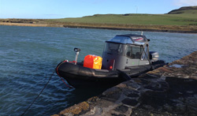

FUN ON THE WATER

If you don't have a boat but would like to have a navigate up a river and/or out to sea, now is your chance.
Canoeing
During the week-end festivities, Celtic Canoes will have a large range of Canadian Canoes available to take visitors out on the River Boyne.
If you would like to canoe on the Boyne, contact Dave at Celtic Canoes on 087 924 6856 or email info@celticcanoes.ie
SEA TRIPS BROUGHT TO YOU BY SKERRIES SEA TOURS
Skerries sea tours is a family run business who offer fun and exciting tours of Dublin's amazing coastline.
Our boat Ocean Dubh is a Redbay 7.4 metre rigid inflatable boat which carry's a P3 licence from the department of transport. We are fully insured and safety is always first. We can carry 7 passengers and 1 crew.
For more information please see our website www.skerriesseatours.ie If you would like to pre-book a trip at The Maritime Festival 2014 please contact Eoin on 085 1699149.
Days :All weekend
Times: by booking
Contact Celtic Canoes or Skerries Sea Tours
Fees : €
Rowing boat exercise
Rowing Boats will take to the water on Friday & Saturday nights
FRI & SAT 20:00